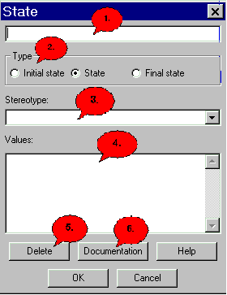

State Dialog |
|
 1. Enter the name of the state here. 2. Select desired state type here. 3. Enter values here (you may give a more detailed desription of the current state). 4. This will remove the current state. Press "Delete" and confirm with "OK" afterwards. Now Jumli will ask you if you are sure that you are sure and the state will be deleted. 5. This button leads you to the docu-dialog. 6. A click on this button will open the dialog help, in which you are right now. 7. Click "OK" to exit and save your changes. 8. Exit dialog without saving changes.
|
Back to the dialog overview |